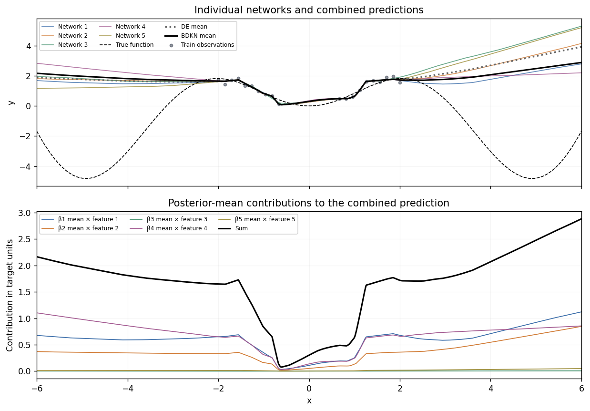
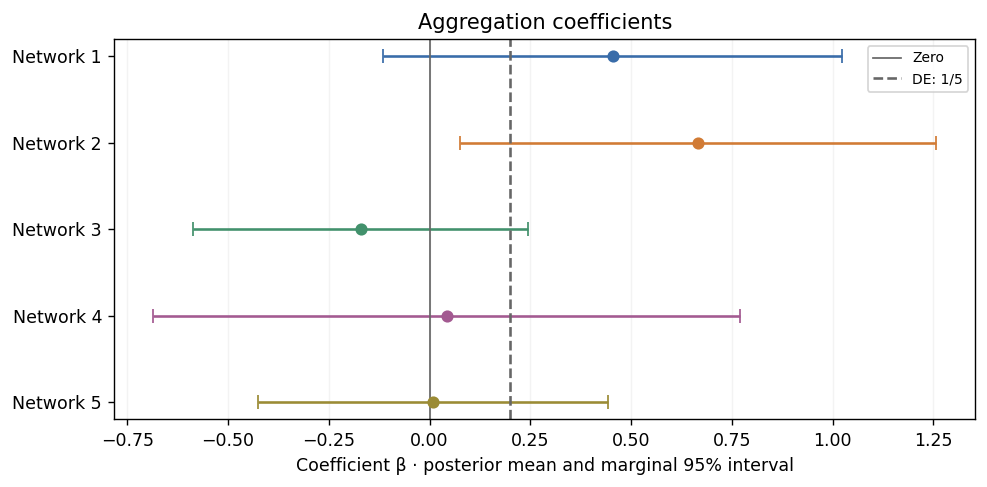
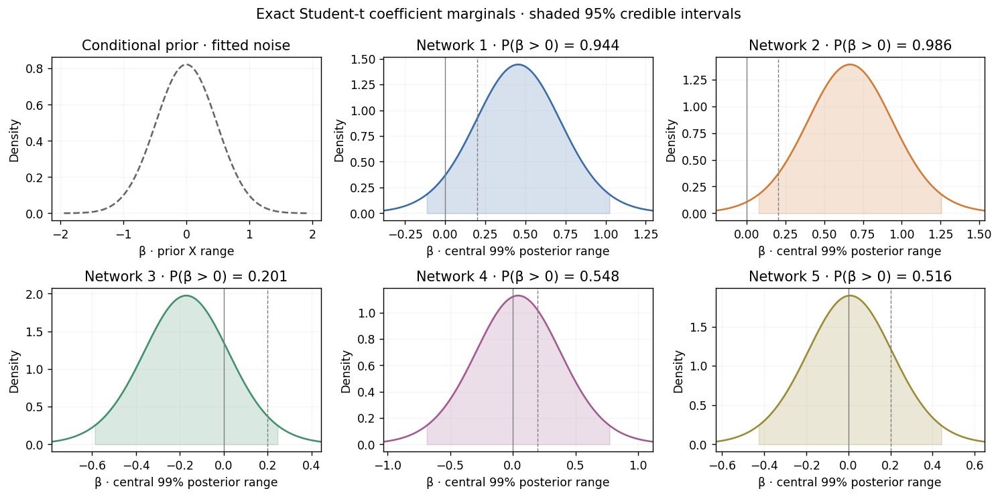
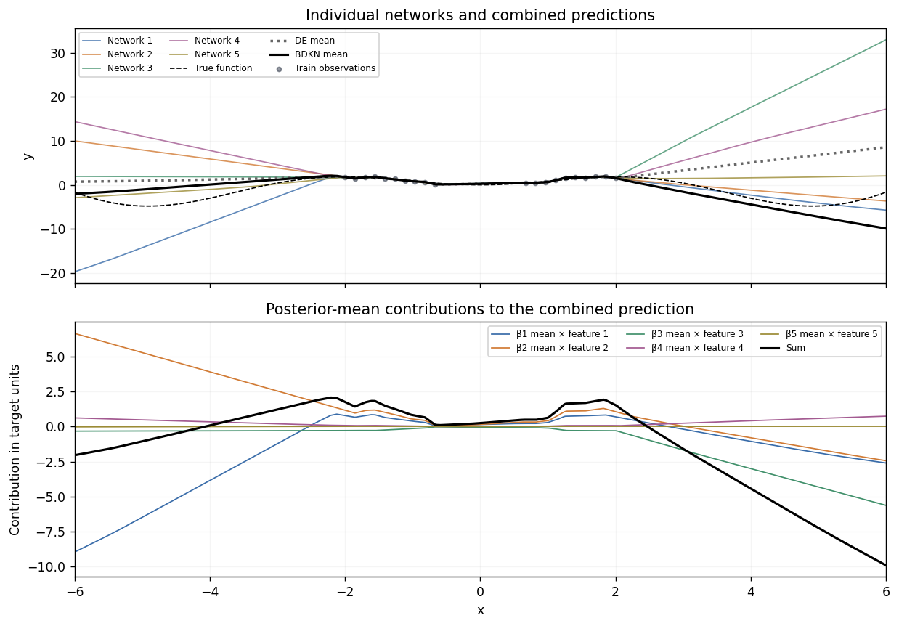
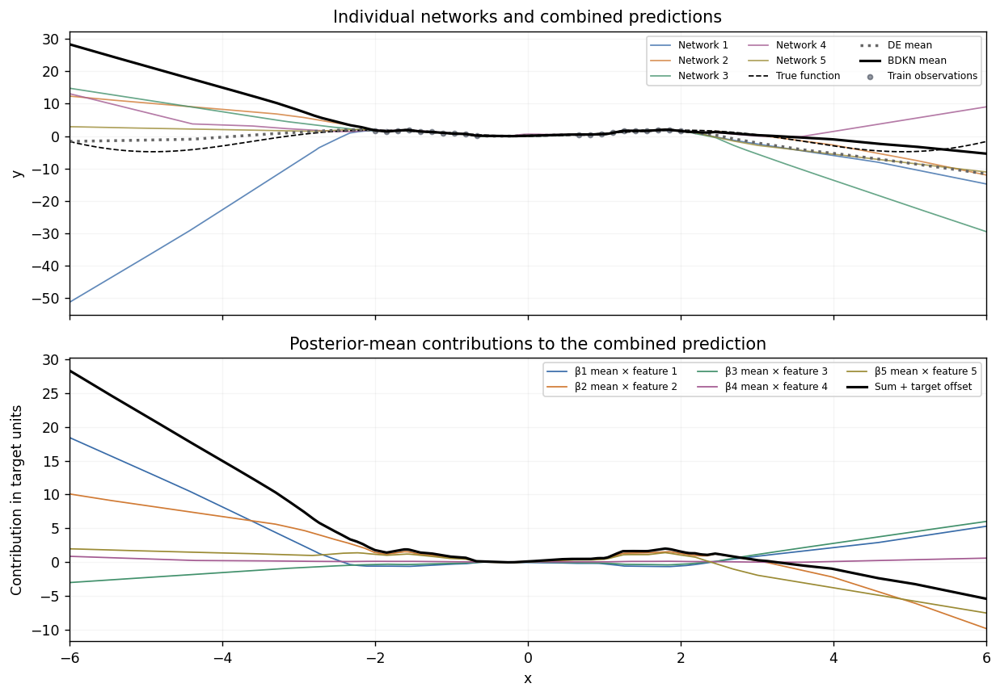
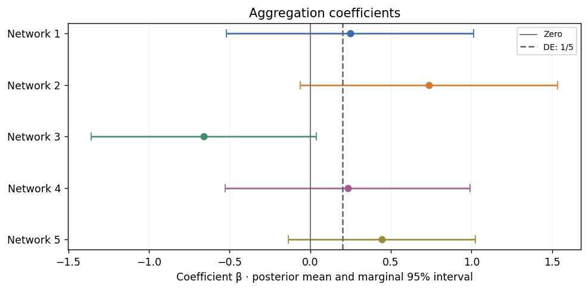
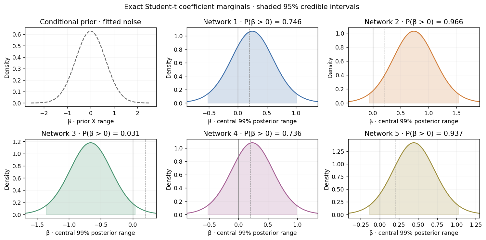
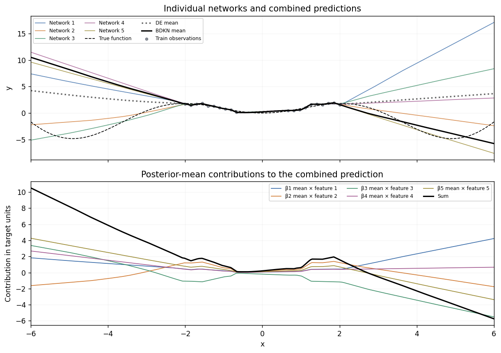

Regression comparison
Download resultsAggregation weights
Coefficients can be negative and need not sum to one. Intervals describe coefficient uncertainty; the dashed reference is DE’s fixed 1/H weight.
BDKN



Each density panel uses its own X range for readability; coefficient intervals above share a common axis. Prior reference conditions on fitted noise. Contribution shares use held-out inputs; test targets are used only for scoring.
| Network | β mean | 95% low | 95% high | P(β > 0) | Contribution share | Test RMSE | Test NLL |
|---|---|---|---|---|---|---|---|
| 1 | 0.40229 | -0.37084 | 1.17542 | 0.85467 | 0.35791 | 3.67243 | 518.48181 |
| 2 | 0.20446 | -0.59245 | 1.00137 | 0.70079 | 0.22500 | 4.14006 | 525.64604 |
| 3 | 0.00120 | -0.58351 | 0.58591 | 0.50169 | 0.00156 | 4.57182 | 116.63683 |
| 4 | 0.38991 | -0.39517 | 1.17498 | 0.84372 | 0.40443 | 3.92271 | 432.30151 |
| 5 | 0.00942 | -0.80302 | 0.82186 | 0.50953 | 0.01111 | 4.38657 | 253.42808 |
Functional repulsion · BDKN



Each density panel uses its own X range for readability; coefficient intervals above share a common axis. Prior reference conditions on fitted noise. Contribution shares use held-out inputs; test targets are used only for scoring.
| Network | β mean | 95% low | 95% high | P(β > 0) | Contribution share | Test RMSE | Test NLL |
|---|---|---|---|---|---|---|---|
| 1 | 0.45450 | -0.11474 | 1.02373 | 0.94430 | 0.35272 | 4.51268 | 4827243.85542 |
| 2 | 0.66667 | 0.07644 | 1.25689 | 0.98561 | 0.35239 | 5.10398 | 6190461.58248 |
| 3 | -0.17098 | -0.58718 | 0.24523 | 0.20082 | 0.24068 | 13.57702 | 11728.15406 |
| 4 | 0.04306 | -0.68511 | 0.77123 | 0.54847 | 0.05211 | 10.15627 | 9981711.38040 |
| 5 | 0.00821 | -0.42508 | 0.44150 | 0.51557 | 0.00210 | 2.81248 | 1596.20864 |
Weight repulsion · BDKN



Each density panel uses its own X range for readability; coefficient intervals above share a common axis. Prior reference conditions on fitted noise. Contribution shares use held-out inputs; test targets are used only for scoring.
| Network | β mean | 95% low | 95% high | P(β > 0) | Contribution share | Test RMSE | Test NLL |
|---|---|---|---|---|---|---|---|
| 1 | -0.35937 | -0.66070 | -0.05804 | 0.01090 | 0.32575 | 14.34008 | 50968163.06502 |
| 2 | 0.81737 | 0.48352 | 1.15123 | 0.99997 | 0.32472 | 6.41671 | 9282115.70188 |
| 3 | -0.20423 | -0.72841 | 0.31995 | 0.21297 | 0.14498 | 10.25173 | 25539780.34969 |
| 4 | 0.06608 | -0.19528 | 0.32744 | 0.69815 | 0.01762 | 6.21768 | 529229.29110 |
| 5 | 0.67880 | 0.14618 | 1.21142 | 0.99246 | 0.18693 | 3.51030 | 2897298.06470 |
First-order repulsion · BDKN



Each density panel uses its own X range for readability; coefficient intervals above share a common axis. Prior reference conditions on fitted noise. Contribution shares use held-out inputs; test targets are used only for scoring.
| Network | β mean | 95% low | 95% high | P(β > 0) | Contribution share | Test RMSE | Test NLL |
|---|---|---|---|---|---|---|---|
| 1 | 0.24743 | -0.51948 | 1.01434 | 0.74567 | 0.20637 | 8.87735 | 4243528.44822 |
| 2 | 0.73638 | -0.06242 | 1.53519 | 0.96558 | 0.12227 | 1.67872 | 63645.67380 |
| 3 | -0.65950 | -1.35650 | 0.03750 | 0.03119 | 0.31329 | 4.97569 | 334.21901 |
| 4 | 0.23343 | -0.52603 | 0.99288 | 0.73565 | 0.12116 | 6.24130 | 7443590.95397 |
| 5 | 0.44392 | -0.13557 | 1.02341 | 0.93713 | 0.23692 | 4.96882 | 5463548.08559 |